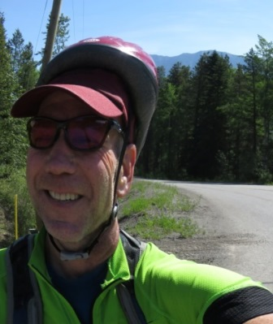
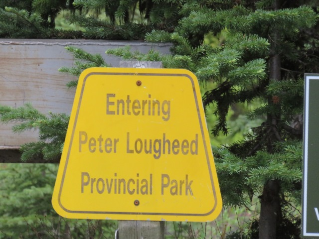
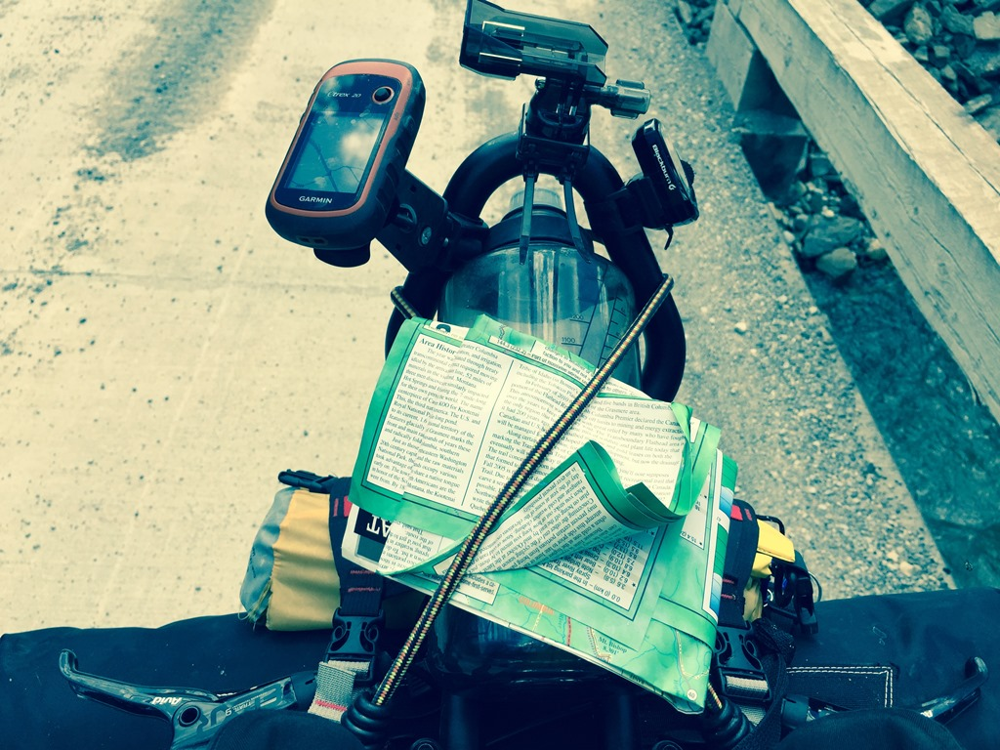
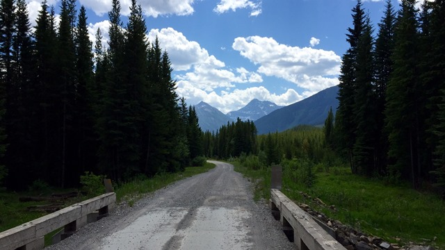
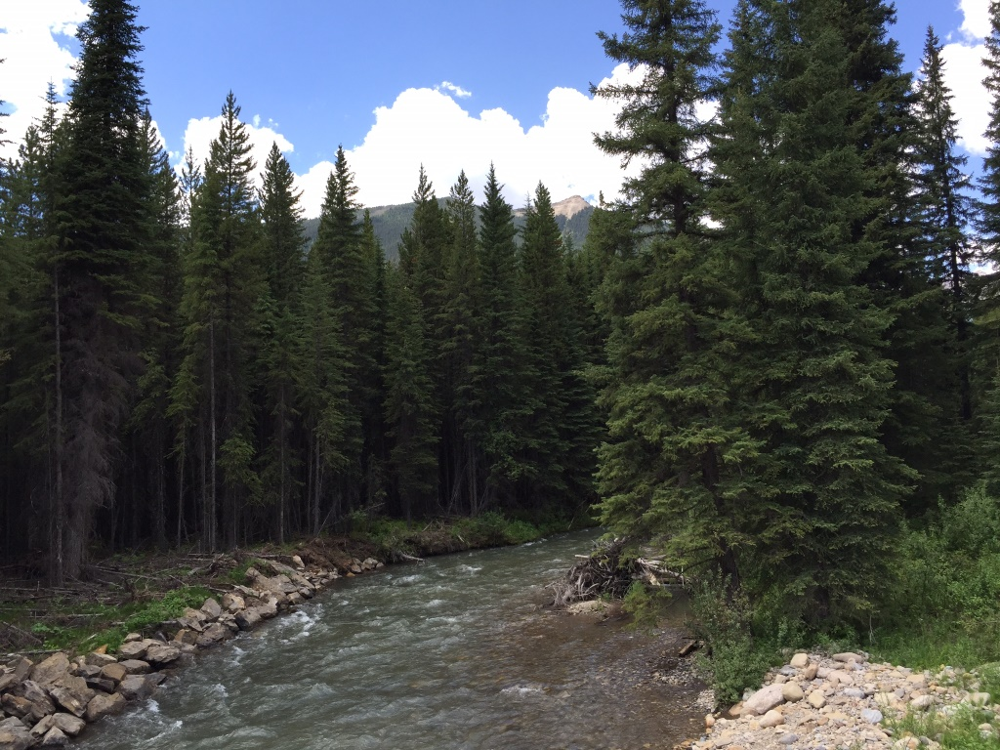
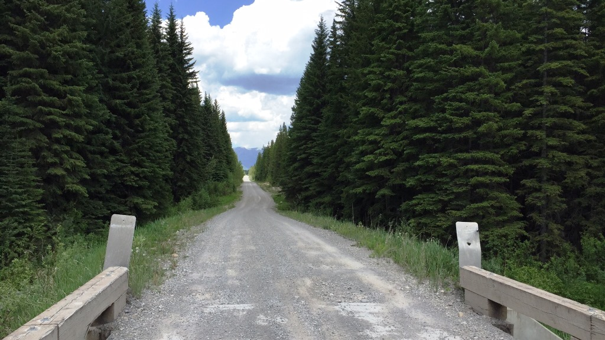
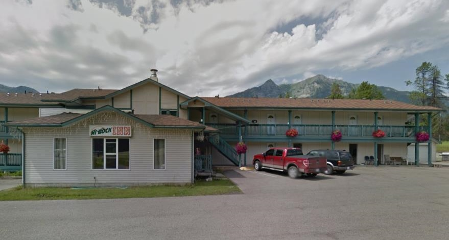
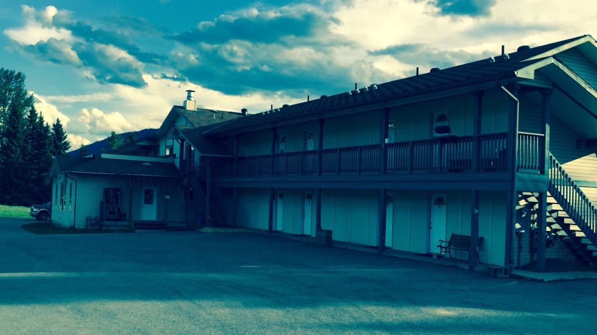

Woke up to a flat front tire and no helmet. The bright side was the grizzly hadn't come by. After seeing bikes on the back of the RV next door, I knocked on the door and offered to buy whatever they had. Nice man from Calgary instead gave me his helmet.

It didn’t come close to fitting my comically large head but after removing the padding and popping it on top of my hat it seemed like it might work even if it looks ridiculous. Next I added a tube to my tubeless tire and decided I needed to fill up the front also.
This caused another dilemma when I used up 3 CO2 canisters because the valve kept coming out of the front tire. Totally frustrated.
But still moving forward and it is another sunny day on the CDMBR.


Elkford Pass
Mornings are for going up
 Looking up at Elkford Pass
Looking up at Elkford Pass
The morning started with a relatively short climb to 6,300 feet over 6 miles. At Elkford Pass I crossed over into British Columbia which is where I would be for the rest of my time in Canada. After the climb it was mostly downhill through the rest of the day to Elkford. Very hot at times. Unusual weather. Beautiful mountains on all sides all day.
 Looking back from where I came
Looking back from where I came
Entered British Columbia

Lost and Found

This would cost me a couple days later.Still working on the bike setup. Dont have a perfect home for a water bottle or the map. I had my first "I can't believe I did this" moment when a man and his son drove up beside me in their pickup and asked if I was missing something. When I looked over the 10 year old boy was holding my dry bag filled with all my extra clothes!!! They had fallen off the rack I had on the back of my bike. It was about then that I decided the rack had to go. I thanked them and after rearranging my straps moved on to the last part of day two.
A river crossing

River crossing
1

River crossing
2

River crossing
3

River crossing
4
Into the great wide open spaces

A little relief for my tires
On my way into Elkford I rode along with two locals who were my first “Trail Magic”. By this point after
only 50 miles both my tires were running low. One of the guys gave me a tube and the other helped fill my
front tire. As he did the tire popped and the Notube tire finally seated.
So now I had an extra tube and
a tire that might hold until Sparwood. Up until this point I thought I might need to get a car to the bike
shop in Fernie (65 miles) or ride the highway instead of the trail. But now I can take the TD route up
through the mountains to make the 40 miles to Sparwood and then get a car to the bike shop. That night I
stayed at the Hi Rock Inn and walked over to the supermarket and pizza place. The evening temperature was in
the 80s and though the Inn owner had found me a fan but it was still a hot night.
"No bikes in the rooms!!!
Why does everyone assume there is no Wifi?"
The innkeep was a little touchy


End of day two. Slow going.Text by Jim O'Brien. Photographs by Jim O'Brien, see additional photos of the Tour Divide on Flickr.